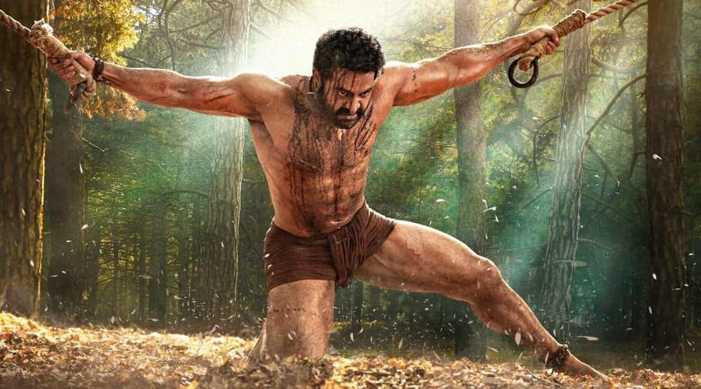

31+ Films
Three decades of mass, emotion, and unforgettable performances.
తారక
Loading the mass...May 20 · Fan Tribute 2026
జననాథుడు · మ్యాన్ ఆఫ్ మాసెస్
Celebrating Nandamuri Taraka Rama Rao Jr. — the heir of a cinematic dynasty, the fire of Tollywood, and the roar heard from Simhadri to RRR and beyond.

Born May 20, 1983, Jr. NTR carries the legacy of Nandamuri Taraka Rama Rao — actor, leader, icon. Known as Tarak to millions, he transformed from child artist to one of Indian cinema's highest-paid stars, earning global acclaim as Komaram Bheem in Rajamouli's RRR.
Three decades of mass, emotion, and unforgettable performances.
RRR took Tarak from Tollywood to the Oscars stage.
Jai, Lava, Kusa — one actor, three souls in Jai Lava Kusa.
From mythological Ramayanam to global phenomenon RRR — every poster, every era. Hover or tap cards for details.
Dear Tarak Anna,
On your birthday, the screens may dim but your light never does. Thank you for every whistle in the theatre, every tear in Nannaku Prematho, every goosebump in RRR. This site is built with pure fan love — no studio, no PR — just admiration from someone who grew up on your films.
With respect & mass regards,
Tejo Ravi Ram
Fan-made · Non-commercial · For celebration only